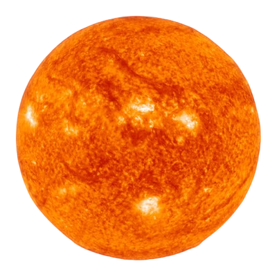

Sol
O Sol é a estrela mais próxima da Terra, dista aproximadamente 150 milhões de quilômetros de nós,
e é responsável por manter todo o Sistema Solar em sua interação gravitacional: oito planetas e os
demais corpos celestes que o compõem, como planetas anões, asteroides e cometas.
